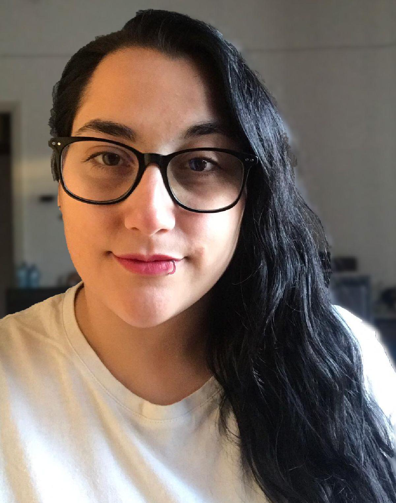

Io sono Maria, sono di Benevento ma vivo da quasi 4 anni a Bologna, ho frequentato un istituto tecnico di istruzione superiore in ambito della chimica industriale e delle biotecnologie. Successivamente ho intrapreso un percorso universitario alla facoltà di ingegneria informatica, dopo due anni ho dovuto per motivi di forza maggiore rinunciare agli studi, ho lavorato per due anni e dopo aver raggiunto una situazione economica abbastanza stabile, ho preso in mano la mia vita e ho deciso di frequentare questo corso per rilanciarmi nel mondo informatico.
Tra i miei hobby sicuramente ha un ruolo predominante il gaming, ma stranamente anche l'acquariologia. Tenendo questi come principali poi a fasi alterne spazio tra l'arte in tutte le sue forme, la cucina e il canto spassionato.
Sono una ragazza tranquilla, socievole se glielo permetti, molti mi reputano simpatica ma probabilmente sono solo goffa.Mi piace sperimentare e imparare cose nuove ogni giorno, in compagnia o anche da sola. Sto bene con me stessa e quindi anche con gli altri, e provo sempre a far stare bene chi mi sta attorno. Detto questo, ho anche dei difetti!
GITHUBLe mie competenze
- Attività di laboratorio basiche
- Programmazione in c++
- Basi architettura dei calcolatori
Competenze da acquisire
- Basi di HTML e CSS
- Padronanza linguaggi di front e back-end
- Migliorare la propria attitudine al lavoro di gruppo
| Percorso lavorativo | Percorso accademico |
| Addetta alle vendite | ITIS chimica industriale |
| Università, facoltà ingegneria informatica |